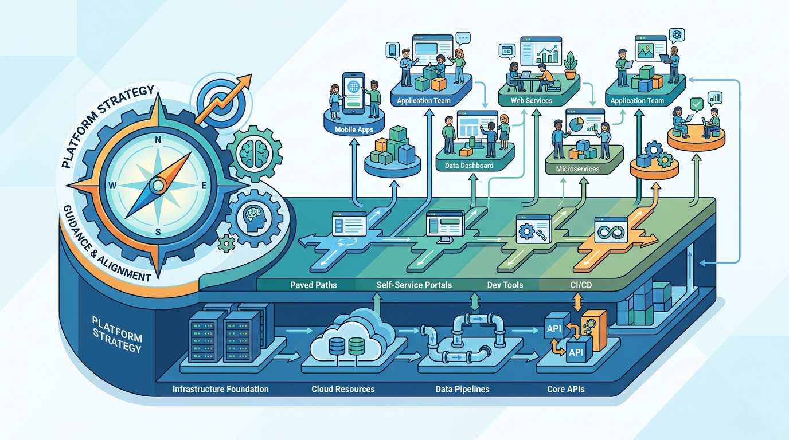

Image generated by Google Gemini (gemini-3-pro-image-preview)
Grounded Platforms
Željko Obrenović's platform operating model, written as records — what a platform is for, when platform engineering earns its keep, how platform teams are built, run, and judged, and the strategy that keeps a platform growing instead of calcifying. Each record ships its working checklist. Informed by practice, by Camille Fournier and Ian Nowland's "Platform Engineering", and by Gregor Hohpe's "Platform Strategy".
No posts match your search.